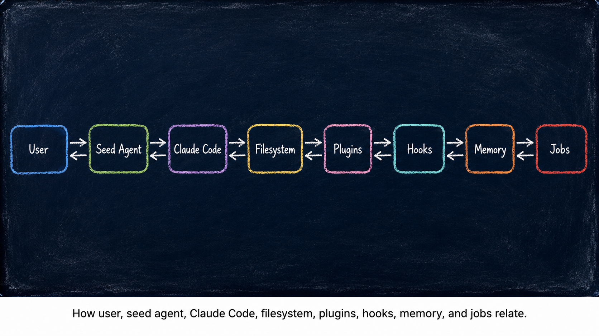

What This Site Is — and How to Use It
FIVE MINUTES. ZERO SETUP.
A bridge page for newcomers. If you landed here from a search result, a link, or curiosity, this is the right place to start.
The rest of the site assumes you already know what a seed agent is, what it does, and how you fit into the picture. This page closes that gap.
What Is a Seed Agent?
A seed agent is a small, free, open-source AI assistant that lives on your computer. You download it, open it in your terminal, and start talking to it.
It comes with a starting set of memory, rules, and skills already built in — like a starter plant in a pot. Over days and weeks of conversation, it absorbs how you work and grows around your professional life.
It is not a chatbot you visit in a browser. It is a workspace that learns you.
Who Is This For?
Professionals with deep domain expertise and no interest in becoming software engineers. Lawyers, consultants, researchers, project managers, real estate agents, educators, journalists, therapists — anyone whose work depends on judgment, context, and accumulated knowledge.
The site uses four loose reader layers. Pick the one that fits where you are right now and click to expand it. You can move between layers at your own pace.
Explorer Curious. Reads the essays. No commitment.
What you do: Read the blog. Form a mental picture of how seed agents work. No tools to install, nothing to configure.
What you read: Part 1 essays (1–4) for the ideas. Browse Part 2 if you get curious.
Next: Start with Essay 1.
Operator Uses a seed agent in daily work. Customizes by talking to it.
What you do: Install one tool (Claude Code), download the seed, open the terminal, talk. Tell the seed what to remember, what to do differently, what jobs to take on.
What you read: Essays 1–4 to understand the ideas. The Part 2 series (5–8) for the vocabulary that lets you steer the seed precisely.
Next: See the seed agent page to learn what is shipping and how to get a copy.
Architect Designs new behaviors for their seed. Edits memory files directly.
What you do: Operator work, plus you sometimes open the underlying memory and rule files yourself. You design new patterns and ask the seed to implement them.
What you read: The full Part 2 series. The architecture is the point.
Next: Browse the blog index and start with the Part 2 series of your choice (B5 through B8).
Contributor Writes plugins, fixes bugs, proposes architecture for the open-source seed.
What you do: Architect work, plus you push changes back into the public seed agent repository for everyone. This is the only layer that requires real programming.
What you read: Everything, including the prototype source.
Next: The open-source repository is still in pre-release. Subscribe via the agents page and you will get a heads-up when contribution is open.
Most readers are Explorers and Operators. That is by design. The deeper layers exist so the system can grow — but you never have to climb the ladder.
What You Are Not Expected to Do
This is the most important section on the page. The site talks about plugins, hooks, file hierarchies, and architectural patterns. That language can read like "you need to become an AI engineer." You do not.
You are not expected to
- Write code, scripts, or configuration files by hand.
- Debug plugins or read source code.
- Understand the internals of the underlying language model.
- Set up a development environment beyond installing one tool.
- Maintain the agent's machinery once it is running.
You are expected to
- Talk to the agent in plain language about your work.
- Learn a small vocabulary so you can steer it precisely.
- Tell it when it is wrong, and watch it adjust.
- Be patient with the first few days while it learns your rhythm.
The deep essays teach the concepts behind the architecture so you can steer the system through conversation — not so you can build the architecture yourself.
PowerPoint-Level Vocabulary Is Enough
You only need top-level concepts. You ask. The seed agent does. Like a film director who knows the words "shot list", "blocking", and "wrap" without operating the camera themselves.
Here are the four words that buy most of the leverage. Learn these and you can run a seed agent.
Job
A unit of work the seed agent can take on, complete, and report back about.
“Take on a job to draft the standard NDA template.”
Memory
A durable note the seed agent keeps across conversations.
“Remember that I always sign contracts as the managing partner.”
Plugin
A specialized skill the seed agent has, or one you can ask it to add.
“Add a plugin that summarizes new case files.”
Phase
The current stage of work: observing, planning, executing, verifying.
“Pause execution and observe the new context first.”
This is most of the vocabulary you will ever need. The essays teach a deeper set for readers who want it — but this list alone is enough to start working.
What the Deep Essays Actually Teach
The blog is split into two parts.
Part 1 (Essays 1–4) introduces the ideas in plain language. Why current AI is not "the agent." Why scaling models alone has hit a wall. Why a human brain handles modern professional life poorly. The vocabulary every professional needs before going deeper.
Part 2 (Essays 5–8, in mini-series form) teaches the architecture of one working prototype seed agent. The Always-On Digital Cortex (B5). The Markov Phasic Brain (B6). The Plugin Kit (B7). From Apprentice to Architect (B8).
Part 2 looks technical because it uses the real vocabulary of a working system. But it is teaching you the language of seed agents — the words and ideas you need so you can collaborate with one conversationally. It is not a build-it-yourself manual.

If you finish Part 1 you will understand why. If you finish Part 2 you will understand how — well enough to steer your own seed, even if you never touch a line of code.
The Three Things Working Together
Three pieces collaborate every time you use a seed agent. You are one of them.
Conversation
The primary way you customize a seed agent is by talking to it. You do not edit configuration files. You do not write rules in a special syntax. You say what you want, and the seed updates the underlying files itself.
Claude Code
Claude Code is the terminal app the seed agent runs inside — think of it as the body the seed lives in. You install it once. After that, you mostly forget about it and just talk to the seed.
Filesystem
Every rule, every memory, every skill lives as a plain text file on your computer. The seed's "mind" is a folder you can open, back up, copy to another machine — and read anytime.
You Can Change Anything You Want
Because the seed's mind is just files, you have two doors into it. Both work. Use whichever feels right.
Through conversation
Tell the seed what to change. “Stop summarizing emails by default.” “Always cite the case number first.” The seed updates the underlying file itself and confirms.
This is the default door. No coding required, no file paths to remember.
Direct edit
Open the file. Read it. Change it. Save. The seed picks up the new rule on the next message. For technically inclined users, or for anyone who just wants to see how the machinery looks underneath.
You never have to use this door. But it is always there.
There are no hidden settings. There is no cloud account holding the agent's mind. Your seed is yours, sitting in a folder on your machine.
Why the Concepts Matter Even If You Never Touch Code
An agent you cannot steer is an agent you cannot trust. The vocabulary in the essays gives you the words you need so the agent and you mean the same thing when one of you says "remember this" or "stop doing that."
You do not need to understand how a plugin works to ask for one. You do need to know what a plugin is, so you can ask the right question.
That is the trade. A few hours of vocabulary buys years of precise collaboration with a system that grows around your work.
Where to Go Next
Pick the door that fits where you are right now. None of these require setup.